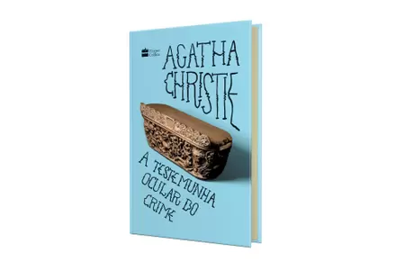

Top 10 melhores livros que eu li em 2023
Explore a minha seleção dos "Top 10 Melhores Livros que Eu Li em 2023" e encontre uma variedade de romances envolventes, thrillers cheios de suspense e histórias de fantasia que vão te transportar para mundos mágicos. Cada livro foi escolhido com base em sua capacidade de me emocionar, entreter e provocar algumas aflições por causa da história. Então prepare-se para se perder em mundos imaginários, se apaixonar por personagens inesquecíveis e mergulhar em histórias que permanecerão com você muito depois de fechar o livro.
- Percy Jackson e os Olimpianos
- As provações de Apolo
- O Pequeno Príncipe
- Coração de Tinta
- Anne de Green Gables
- Cálice dos deuses
- Os crimes ABC
- O natal de Hercule Poirot
- A testemunha ocular do crime 
- Melhor do que nos filmes
Essa série de livros, escrita por Rick Riordan, é baseada nos acontecimentos da mitologia grega, misturando fantasia e aventura com ela. Nos livros, os deuses gregos continuam vivos em pleno século XXI. Eles ainda se apaixonam por mortais e têm filhos, os famosos semideuses, os quais podem se tornar grandes heróis, mas que acabam, geralmente, encontrando terríveis destinos. Apenas alguns deles descobrem sua identidade e conseguem chegar à Colina Meio-Sangue, um acampamento de verão dedicado ao treinamento de jovens semideuses. Percy Jackson é um deles. Ele tem doze anos e há seis enfrenta problemas nas escolas por onde passa, não só por tirar notas baixas e por ter transtorno do déficit de atenção e dislexia, mas também por seus problemas sempre ocorrerem em circunstâncias estranhas. Quando Percy descobre que é um semideus, sua vida ganha outro sentido, e só então sua trajetória heroica se inicia e ele é levado a enfrentar missões importantes que podem comprometer a sobrevivência de toda a humanidade.
Essa outra série de livros é como se fosse um continuação de Heróis do Olimpo, que é a segunda série do mundo de Percy jackson, ou seja, é a terceira série desse universo. Nele, depois de despertar a fúria de Zeus por causa da guerra com Gaia, Apolo é expulso do Olimpo e vai parar na Terra, mais precisamente em uma caçamba de lixo em um beco sujo de Nova York. Fraco e desorientado, ele agora é Lester Papadopoulos, um adolescente mortal ao invés de um deus. Sem seus poderes, a divindade de quatro mil anos terá que descobrir como sobreviver no mundo moderno e o que fazer para cair novamente nas graças de Zeus.
Esse é um dos livros clássicos mais famosos e adorados pelo mundo todo. Ele narra acontecimentos vividos por um menino originário do asteroide B 612. Após a queda de um avião no deserto do Saara, o piloto faz amizade com essa sábia criança, que consegue ver o que os adultos são incapazes. Ao longo da história, o Pequeno Príncipe vai narrando as suas aventuras para o protagonista e, ao ouvir as aventuras do Pequeno Príncipe, o protagonista vai percebendo como as pessoas deixam de dar valor as pequenas coisas da vida conforme vão crescendo.

Essa história gira em torno de Meggie Folchart e seu pai, Mo, cujo talento extraordinário é tão maravilhoso quanto perigoso: ele pode trazer personagens dos livros para o mundo real simplesmente lendo em voz alta. Mas quando Meggie descobre que sua mãe, Resa, desapareceu misteriosamente na mesma noite em que Mo leu um livro chamado "Coração de Tinta", ela percebe que há mais sobre o poder de seu pai do que ela jamais imaginou. Determinada a encontrar sua mãe e desvendar o mistério por trás de sua partida, Meggie se vê mergulhada em um mundo de magia e perigo. Ao lado de Mo e de seus novos aliados, incluindo o encantador escritor chamado Dedo Empoeirado, Meggie embarca em uma jornada repleta de desafios, enfrentando vilões cruéis e criaturas encantadas.
"Anne of Green Gables" é um romance clássico escrito por Lucy Maud Montgomery e publicado pela primeira vez em 1908. O livro conta a história de Anne Shirley, uma garota órfã de 11 anos, com cabelos ruivos e uma imaginação vívida, que é adotada por engano por um casal de irmãos idosos, Matthew e Marilla Cuthbert, que vivem em Green Gables, uma fazenda na Ilha do Príncipe Eduardo, no Canadá. No decorrer da história, Anne descobre o valor da amizade, da família e do amor, e aprende importantes lições sobre perdão, aceitação e autoconfiança.
Depois de salvar o mundo inúmeras vezes de monstros, titãs, gigantes e outras criaturas aterrorizantes, tudo que Percy deseja é que seu último ano no ensino médio seja tranquilo. Infelizmente, os deuses têm outros planos para o jovem herói. Se ele quiser mesmo entrar na universidade, terá que cumprir três missões para conquistar três cartas de recomendação vindas diretamente do Monte Olimpo. A primeira missão envolve ajudar o copeiro de Zeus a recuperar seu cálice antes que ele caia nas mãos erradas.

A trama se desenrola quando uma série de assassinatos ocorre em Londres, com as vítimas sendo, aparentemente, escolhidas em ordem alfabética e deixando um guia férreo, do tipo ABC, ou seja, em ordem alfebética, em cada cena do crime. O detetive Poirot é chamado para investigar os casos e rapidamente percebe que está lidando com um assassino altamente inteligente e calculista.

O conto se passa na véspera de Natal, quando Hercule Poirot planeja passar um período tranquilo em um hotel luxuoso no interior da Inglaterra. Contudo, seus planos são interrompidos quando recebe um pedido de ajuda de um amigo que teme ser assassinado durante o feriado. Após o assasinato realmente acontecer, Hercule sabe que foi alguém que estava presente na ceia que cometeu o crime. Poirot, sempre intrigado por desafios de detetive, não pode ignorar o apelo de seu amigo e se vê mergulhado em uma trama repleta de mistério e suspense.
No momento em que dois trens se cruzam, Elspeth McGillicuddy vê de sua janela um homem estrangular uma mulher na outra locomotiva. Ao chegar na estação, ela tenta denunciar o crime, mas é desacreditada. Quem além de Miss Marple poderia levar sua história a sério? Após dias se passarem e nenhuma notícia aparecer no jornal, Miss Marple liga para sua jovem amiga Lucy Eyelesbarrow e pede para ela se disfarçar e ajudá-la na investigação. Lucy aceita o desafio, e se infiltra na mansão de uma poderosa família local que parece estar no centro do mistério, os Crackenthorpe.

Melhor do que nos filmes é um romance que fala sobre a vida de Elizabeth Buxbaum, a qual sempre teve suas reservas em relação ao seu vizinho, Wesley Bennett. Apesar de sua aparência agradável e charmosa, Liz tinha certeza de que por trás da fachada havia apenas um sujeito entediante. Por outro lado, Michael Young, seu amor de infância, possuía todas as qualidades dos protagonistas das comédias românticas que Liz tanto adorava, mas ele havia se mudado quando ainda eram crianças. Agora, após uma década, ele retornou, mais encantador do que nunca. O reencontro com Michael na escola parecia ser um sinal do destino. Com o último ano do ensino médio se aproximando, Liz ansiava por momentos grandiosos, um baile de formatura memorável e um romance apaixonante. Determinada a encontrar o amor verdadeiro, Liz decide recorrer ao seu vizinho irritante em busca de ajuda.
Clique aqui para voltar ao início